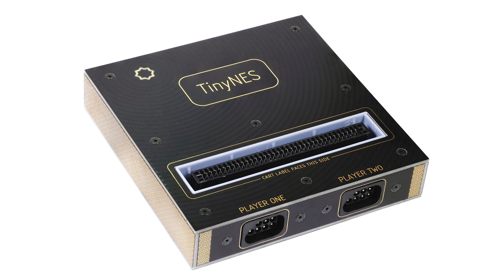
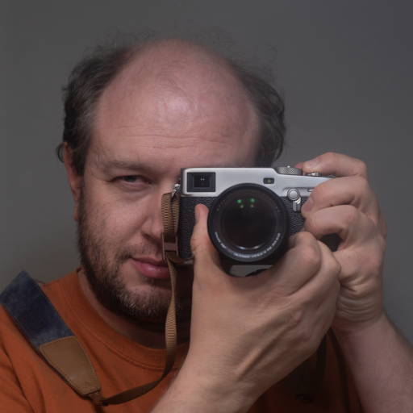
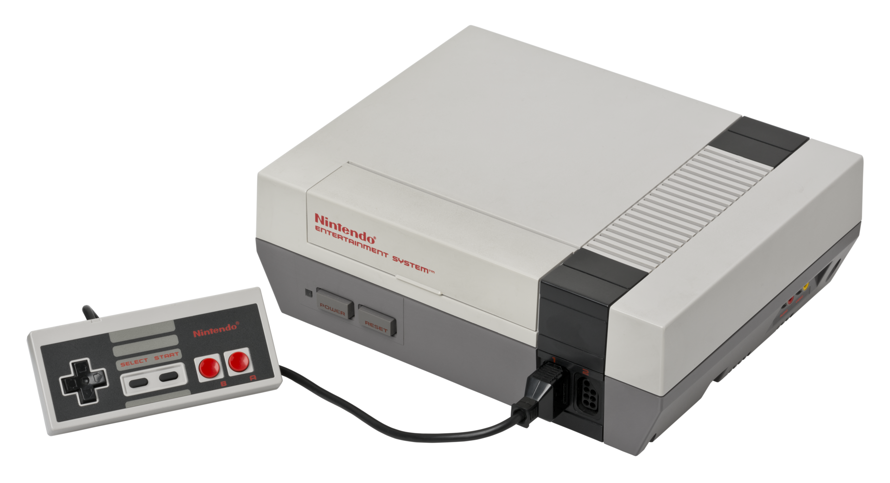
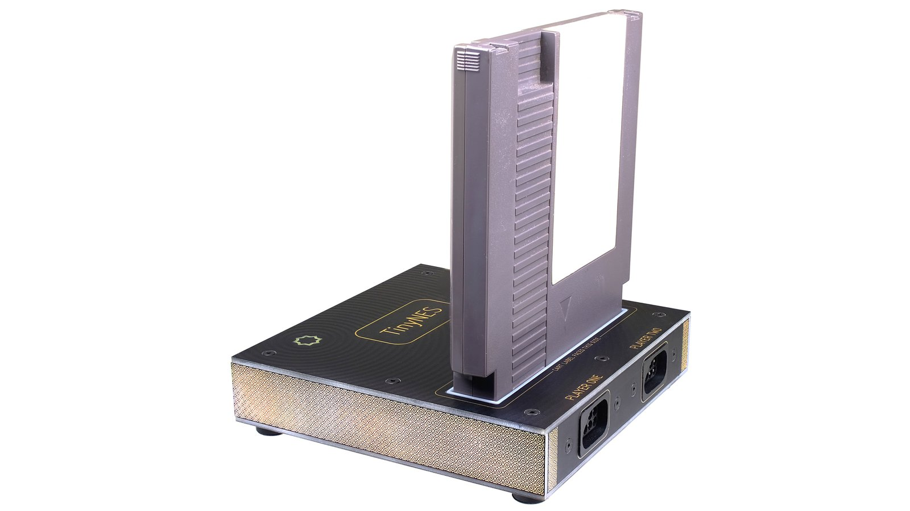
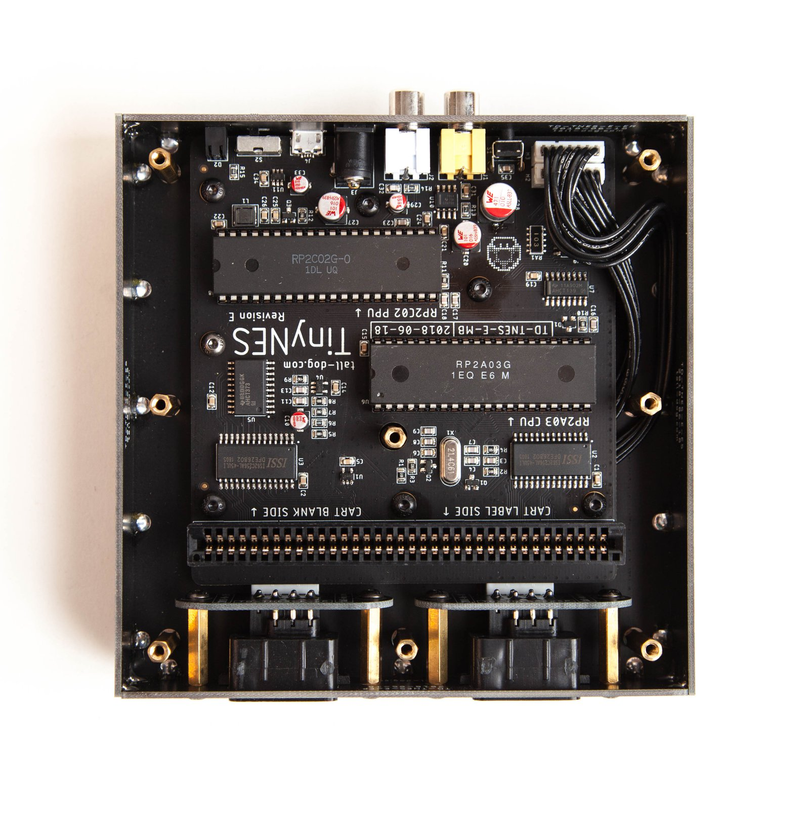
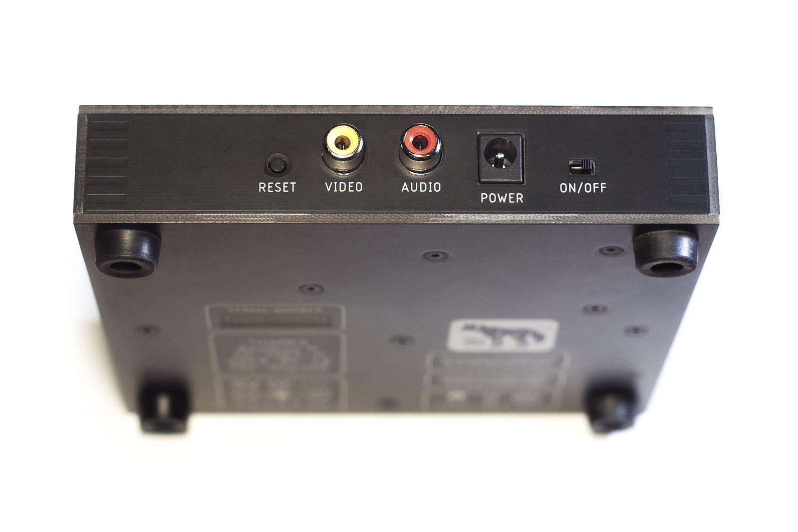
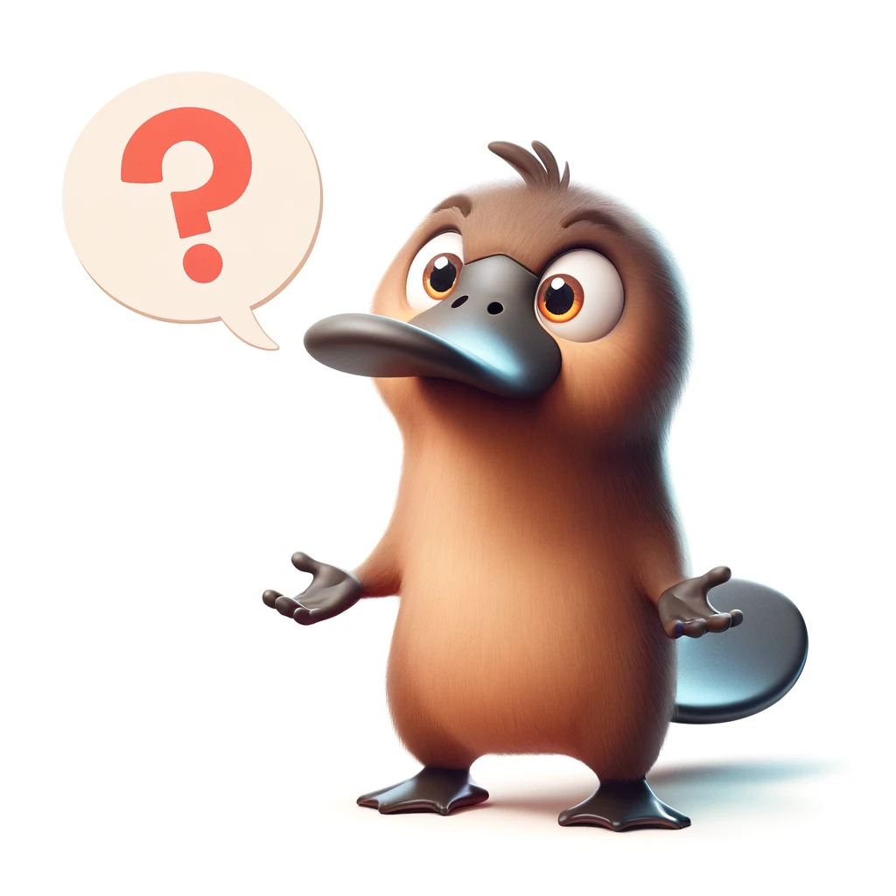

name: initial-layout layout: true <div class="nx-header-flag-1"></div> <div class="nx-header-flag-2"></div> <div class="nx-footer"> <small> <a href="https://alienfile.org/slides/tinynes">alienfile.org/slides/tinynes</a> </small> / <a href="https://mastodon.social/@plicease">@plicease@mastodon.social</a> / <a href="https://sched.co/1dGrX">The Perl Conference</a> / 25 June 2024 </div> --- name: title class: center, middle  # *Retro Modern* ## TinyNES and Perl ??? ... --- template: initial-layout layout: true <div class="nx-header-title">🌻 Retro Modern</div> --- class: nx-hide-bullet  # Graham Ollis * <img src="img/fastly.svg" class="nx-icon"> Software Engineer at <span class="nx-red-link">[Fastly](https://fastly.com)</span> * [@plicease@mastodon.social](https://mastodon.social/@plicease) * <img src="img/github.svg" class="nx-icon"> [github.com/plicease](https://github.com/plicease) * <img src="img/perl.svg" class="nx-icon"> cpan: [PLICEASE](https://metacpan.org/author/PLICEASE) * <img src="img/irc.svg" class="nx-icon"> [\#native](https://kiwiirc.com/nextclient/#irc://irc.perl.org/#native?nick=mc-guest-?) on [irc.perl.org](http://irc.perl.org) ??? Hello, my name is Graham Ollis I’m a retro programmer. Although to be clear, when I started my career as a programmer … (last century) … Perl wasn’t considered a retro programming language. --- class: center # NES  ??? In my dwindling supply of free time I like to play retro video games. Although to be clear, when I started playing these games … (last century) … they weren’t considered retro. This is my favorite retro console, the Nintendo Entertainment System or NES. A lot of retro gamers prefer the 16 bit Super NES as the greatest console ever made, but for my money the original 8 bit Nintendo plays the best games. --- # NES Problems * Zero Insertion Force (ZIF) cartridge slot * 10NES lockout chip ??? Problem with the original NES is that it has this unreliable ZIF cartridge slot and a lockout chip both of which tend to glitch rendering the console unusable, even with officially licensed Nintendo games. Time for a quick PSA: don’t blow on the cartridge contacts. Everyone “knows” that fixes it, but most likely ejecting the cartridge and re-inserting is what fixed it. And blowing your spittle onto the contacts, in the long run, will likely make the problem worse. --- # NES Alternatives * Emulation * FPGA ??? So I had just gotten myself a new-old stock CRT television for that accurate 1980s retro gaming vibe, and I was spending a lot of time cleaning cartridges … (without the spittle mind you) … but it was still super unreliable and I was in the market for a NES alternative. In 2024 the main alternatives are a console that emulates a NES in software or uses an FPGA that does the moral equivalent in hardware. These don’t offer 100% compatibility with the original NES though, And unfortunately for my needs most of these modern retro consoles output to HDMI for compatibility with modern TVs. --- class: center # What is the Tiny Nostalgia Evocation Square?  ??? Then I ran into this solution, the Tiny Nostalgia Evocation Square --- class: center # TinyNES ??? … or TinyNES. Which is a pretty clever name in my opinion. And if you pronounce it quickly it sounds like “tinyness”. Anyway, what does this have to do with Perl? Well nothing really. … but like Perl it is open source, meaning you can in theory make one of these yourself. … and like Perl it has a backronym to justify its name after the fact. --- class: center # CPU + PPU  ??? … and like Perl it has retro and modern parts. Here are the guts of the console, where you can see a for real 6502 processor and the PPU that give the console nearly 100% reproduction of the original NES experience … minus the blinking red light. --- class: center # Composite Out </center> ??? … and crucially for me, it outputs composite that goes directly into my retro TV. --- # Details * NOT Emulation, NOT an FPGA * Small modern shell about the same size of a NES cartridge * Works with Famicom carts with an adapter * Supports Famicom expansion audio * I haven't gotten it to work with the Famicom Disk System (FDS) ??? So to review, this is not emulation or an FPGA, It is contained in a small modern shell about the same size as a NES cartridge, It works with Famicom games as well, so if you, like me, want to import Japanese titles you can. It even supports the Famicom expansion audio (and Castlevania 3 sounds amazing) Although I haven’t gotten it to work with the Famicom Disk System --- class: nx-hide-bullet # Buy One Today * <a href="https://www.crowdsupply.com/tall-dog-electronics/tinynes">www.crowdsupply.com/tall-dog-electronics/tinynes</a> ??? So yeah. Buy one today! I think they are still available on this website. I don’t get any kickbacks or anything like that, I just really love this console. --- name: questions class: nx-hide-bullet  # Contact * <a href="https://alienfile.org/slides/tinynes">alienfile.org/slides/tinynes</a> * <img src="img/irc.svg" class="nx-icon"> [\#native](https://kiwiirc.com/nextclient/#irc://irc.perl.org/#native?nick=mc-guest-?) on [irc.perl.org](http://irc.perl.org) * [@plicease@mastodon.social](https://mastodon.social/@plicease) ??? If you have any questions, track me down while I am here, or ping me on Mastadon. --- # <img src="img/fastly.svg" class="nx-icon"> We're Hiring! ??? Oh and by the way, I work at Fastly and we are hiring. In fact we are currently hiring for a slot on my elite team of Perl and Go developers so if you enjoy working on interesting problems track me down while I am here.